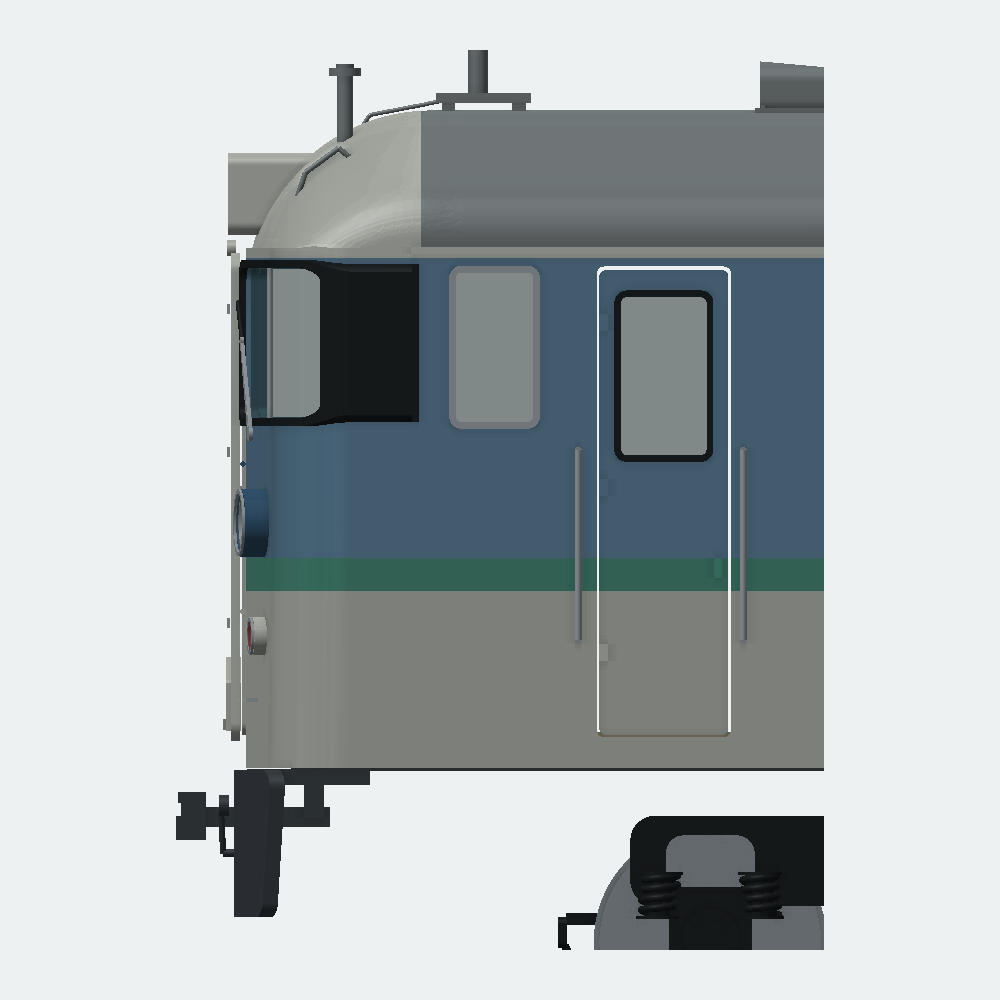
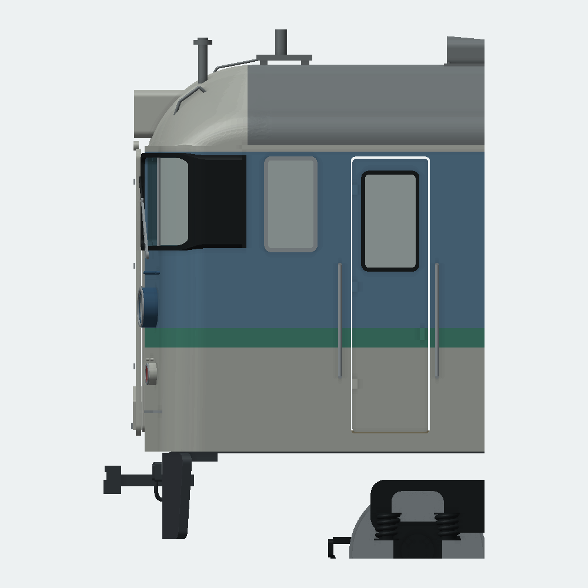

基点a2b5bf335、作業予約a94911f48。同じ開発ブランチで模型生成・検査・資料を変更した。CADアプリ本体は変更していない。
変更前後の比較資料・CADデータ ／ 最終検証 ／ 各回の時刻と対象版
| 回 | 問題 | 変更と再確認 |
|---|---|---|
| 1 | スカートが車体より前に見える | 全幅をX+2 mm後退。床板からの幅広い返しと栓・管も追従。9か所の実STL断面で旧版の突出と新版の後退を比較。 |
| 2 | 前面手掛け・ステップが折妻に沿わず浮く | 傾きを外板へ合わせ、短い取付脚と接触面を作った。実BRepの接触6か所と拡大画像を確認。 |
| 3 | 客扉窓が短い。手掛けが丸環 | 上端固定で下へ窓を拡大し、縦長角形の手掛けと上下指掛けを追加。下部の膜を拡大画像で発見し、03bで切削開始位置を修正。 |
| 4 | 側窓上端が高い。後部側面表示がない | 写真の相対比を参考に窓列を2.4 mm下げ、枠・中桟・開口・ガラスを追従。確認できる側へ黒Hゴムと空白表示板を追加。 |
| 5 | ジャンパ栓が円柱と直管で単調 | 5個の配置を保ち、角丸箱・蓋・ヒンジ・連続Bezier曲管を各1部品へ融合。全景、正面、左右側面、屋根、台車を再照合。 |
各回の生成→形状計算→実形状PNG確認を終えて次の回へ進んだ。最終段階で通常・前後分割の全検査を行った。途中の重点検査を完成版の全体検査とは表示していない。


同車1222／N15の原写真で前面、客扉、屋根、側面表示を確認した。写真は2013年の訓練車であり、長野色営業時代へ湘南色・訓練車文字・仕切の改造を移していない。写真の転載はしない。
側窓は第一客扉を基準とする簡易射影推定も参考にした。扉上端から戸袋窓枠上端への落差は写真近似で約2.5 mm、旧模型では約0.053 mm。読取境界・裾絞り・扉高さ自体の不確かさがあるため、実車寸法を測定したとは扱わず、2.4 mm下降を模型設計値として採用。窓高さ10.45 mmは維持した。
車体裾Z14 mmとスカートZ7 mmを同じYで比較した9断面では、旧版の最大突出約1.59 mmが、新版では最小約0.41 mm後退となった。実車取付位置の実測値ではない。詳細は 断面記録。
| 版 | 部品 | 点 | 接触 | 全対候補 | 分割再組立 |
|---|---|---|---|---|---|
| 通常 | 234 | 1,063 | 119 | 438 | 対象外 |
| 分割 | 241 | 1,063 | 119 | 429 | 6組 |
全可視部品が各1閉ソリッド・有効・正体積。全STEP再読込、全STL閉鎖性・面向き・退化・体積差、保存定義・表示・所属と再読込形状を確認。干渉体積上限1e-6 mm³、STL体積差上限0.2%は維持した。8件の証拠欠落・失敗・古い証拠の拒否も確認。
通常起動では画面表示自体は成功したが、ワーカーの検証済みキャッシュ再利用を必須とした初回確認はキャッシュヒットがなく不合格として保全。通常起動へ条件を直して再確認し、Windowsの可視ウィンドウと描画を確認した。読み込み高速化やウォーム起動の成功とは主張しない。経緯は out/models/kuha115-appearance-review-20261027/startup-recovery.json。
読み取り専用レビューで梱包前の画像欠落と証拠の束縛不足を発見し、通常/分割CAD、保存CAD、全STEP/STL等968ファイルを検証結果のSHAへ結び付けた。必須11画像は元の報告・設計・レンダラー・PNGのSHAを記録。実packagerにSHA不一致・必須画像欠落を与える3拒否経路をmockで試験し、実モデルファイルは書換えない。コピー元/先を再照合し、原点移動後のSTLは全頂点と移動量、閉鎖性・体積を再確認する。
製品ソース・試験・ビルド設定1,162ファイルと配布物948ファイルを前回の全体ゲートと照合し一致。使用exe SHA256は972b8b84567adffd1cdf1310f1cc30ee30d9b4a0a184965aa41896c369511bc9。前回の195 CTest・開発/配布600 UI・旧自己試験の証拠を再利用したもので、今回全製品試験を再実行した意味ではない。
完成ZIPは1,039ファイル、CRCと配布マニフェストの全SHAが一致し、資料内57ローカルリンクを確認。証拠JSONは値の一致を確認してLFへ正規化し、Gitの改行処理後も照合可能にした。スカートは追加の321断面でも最小約0.416 mm後退を確認（両側の極端な丸い端部を除くY±15.95 mm）。記録は out/models/kuha115-appearance-review-20261027/delivery-check.json と dense-skirt-sections.json。
生成は tools/modeling/kuha115_ho/revised.py の --detailed --contoured --appearance-pass 1〜5。各回は validate_model.py と inspect_appearance.py、最終版は validate_appearance.py の --phase split と --phase finish、render_detailed.py、test_appearance_delivery.py、assemble_appearance.py。すべての引数は --help を参照。作業記録は out/models/kuha115-appearance-review-20261027/。
モデルの出力先は samples/series115-ho-fivepass-20261027/、STL・STEP一式は out/models/kuha115-ho80-fivepass-20261027/。削除ファイルなし。旧版・ユーザー原本・他worktree・無関係の未追跡ファイルは保全した。
実印刷・接着強度・走行・台車旋回は未試験。局所寸法、床下機器の同定、反対側表示や年代差には未確定が残る。外観改善の記録を、特定車番の実測復元完了や実製作成功とは混同しない。